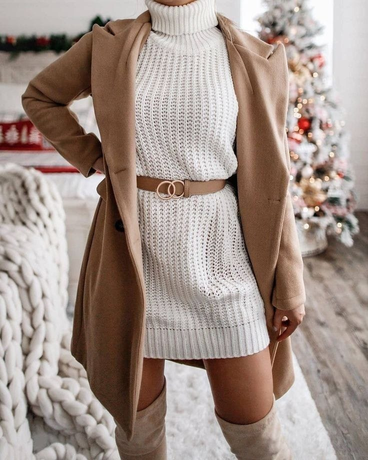

Sweaters: Sweaters are a winter wardrobe staple for women. Opt for cozy materials like wool, cashmere, or knit blends. Choose from various styles such as turtleneck, crew neck, or V-neck, and experiment with different patterns, textures, and colors to add interest to your outf
